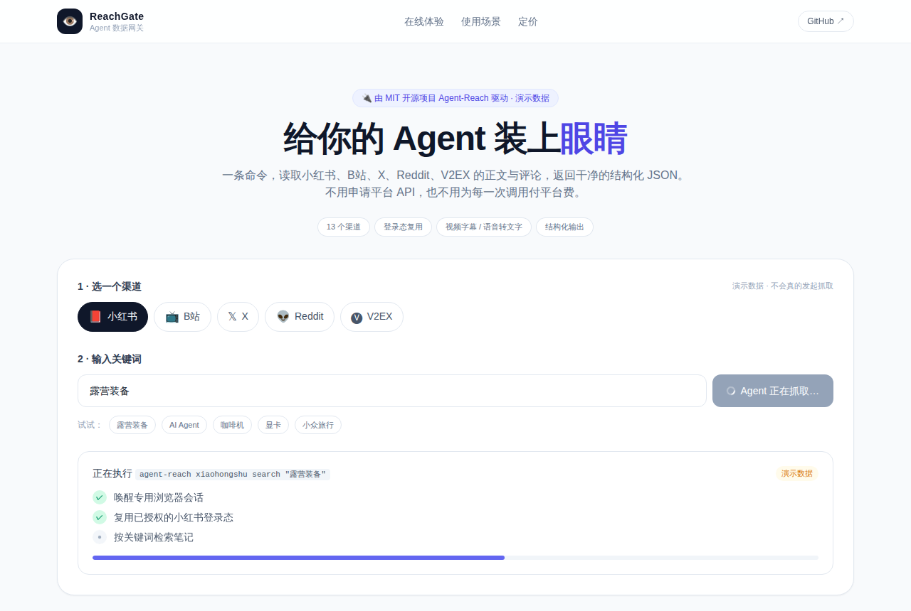

Agent-Reach：给AI装眼睛读小红书B站
Panniantong/Agent-Reach · AI基础设施MIT⭐ 103,483

Agent-Reach（仓库：Panniantong/Agent-Reach）是一个开源命令行工具，目标是让 AI 助手能读到那些它自己上不去的互联网内容：需要登录才能搜的小红书笔记、B站字幕、X 账号动态、V2EX 帖子，以及雪球行情。从 README 看，它把各平台背后的抓取工具装好、测好，Agent 一条命令就能用，支持 B 站、V2EX、GitHub、YouTube、小红书、雪球等十几个渠道，默认渠道装好即用，可选渠道说一句“帮我加上”就会自动安装。
它最近火的原因很直接：Agent 产品今年集中爆发，但“能写代码”和“能读真实互联网”是两回事。通用搜索覆盖不到中文社区和登录墙后的内容，而 Agent-Reach 正好补上这块，加上 MIT 协议和零 API 费用的口号，传播很快，每天新增约 723 星。
如果做成产品，机会在“托管版数据网关”：统一 API 让 Agent 读取各平台内容，按调用量或渠道订阅收费。对做垂直 Agent 的团队来说，自己维护十几套抓取逻辑不划算，有人把脏活包掉就有付费空间。但要注意，它的核心是合规爬虫封装，商业化会被平台条款压着走，产品化得先想清楚登录态和封禁怎么绕。
今日 Top 5
| # | 项目 | 传播 | 创业 | 综合 |
|---|---|---|---|---|
| 1 | Panniantong/Agent-Reach | 8.0 | 7.2 | 7.56 |
| 2 | storytold/lightcraft | 8.0 | 6.65 | 7.29 |
| 3 | storytold/filmcraft | 7.67 | 7.1 | 7.24 |
| 4 | ludovic111/horizon | 8.67 | 5.85 | 7.19 |
| 5 | alchaincyf/huashu-design | 8.33 | 7.65 | 7.08 |